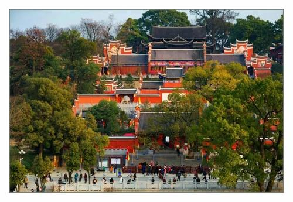

山寺晚钟
法华寺
在永州城内矗立着一座巍峨秀丽的东山。在山巅之上，屹立着一座千年古刹。这座苍朴古老的庙宇，就是唐时的法华寺，明以后称高山寺。寺外古木参天，松柏掩映，翠竹环绕，下瞰潇湘如带，城廓俨然在望，晨曦辉映。而每当夜幕降临，则钟磬齐鸣，声播全城，故有“山寺晚钟”之谓，为永州八景之一。

《东山》诗
唐元和年间，柳宗元谪居永州十年，喜爱这里秀丽诱人的景色，移居于此，以“以法华浮图之西临陂池丘陵，大江连山，其高可以上，其远可以望，遂伐木为亭，以临风雨，观物初，而游乎颢气之始。”(《法华寺西亭夜饮赋诗序》)，他常与朋友坐于新构的法华寺西亭观景、夜饮、赋诗、作文。既暂忘了世俗烦忧，又对时世观察省度，写下了诸多优秀作品。宋著名政治家、文学家范纯仁谪居永州时曾寄寓寺之西轩。大诗人杨万里为零陵县丞，常游东山，还写了一首《东山》诗，对东山的喜爱之情，溢于言表。
高山寺
东山又名高山，南北走向，联亘十里。《永州府志》载：“府城地形，高下起伏，冈阜缪绕，郁然耸城之中者，高山为最。联亘于城东隅，故又名东山，高山有唐时寺，后府学建而寺始坏。”法华寺的合名，乃受佛书《法华经》、《法华文名》、《法华玄义》的影响，属天台宗。法华寺自唐中叶建成后，寺名屡改，又几度兴废。宋时改名“万寿寺”，后更名“报恩寺”，明洪一牙初改称“高山寺“。